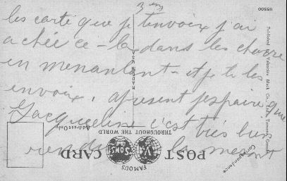

Au lieu d’une lettre, Charles pouvait envoyer, ensemble dans une enveloppe, une série de cartes postales qu’il numérotait et qui formaient un ensemble complet. La carte suivante est la 3ème d’une série dont nous ne possédons pas les autres cartes.
|
|
 Les carte que je t’envoix j’ai achée ce-la dans les charre en menanlant et je te les envoix. Apresent jespaire que Jacqueline c’est très bien rendu a la mesont Les cartes que je t’envoie, je les ai achetées dans les chars (le train) en m’en allant et je te les envoie. À présent j’espère que Jacqueline s’est très bien rendue à la maison. (Jacqueline l’avait sans doute reconduit à la gare pour son départ vers Kingston, lieu de garnison).
|